同一批「固定機位、跨 8 天、整日連拍」的生活科技木作課素材，剪成五支風格完全不同的短片。本頁是視覺化分鏡腳本——每支附節奏軸、逐鏡縮圖、字卡文字與選鏡來源。
--thresh 0.2）。Palmier 本身無此能力。overlay——因這台 ffmpeg 未編入 drawtext；字型、字距、描邊全可控。xfade 串接多段並強制正規化 1920×1080（deface 會把畫面墊高到 1088）。| 片 | 核心做法 |
|---|---|
| A 縮時 | setpts=PTS/N 抽幀縮時 ＋ tmix 多幀平均殘影 ＋ 暈影 |
| C 懷舊 | 褪色 curves（提黑）＋ 低飽和 ＋ 暖陰影/冷高光 ＋ noise 顆粒 ＋ 慢推 |
| E 監視器 | 冷調 ＋ 重暈影 ＋ 掃描線疊圖 ＋ 綠色 HUD／時間碼 ＋ deface 模糊＝遮蔽 |
| B 魏斯 | 置中裁切（對稱）＋ 粉彩（提亮、低對比）＋ 粉彩章節卡 ＋ 硬切 |
| D 偽紀錄 | 自然調 ＋ 局部 zoompan 推近 ＋ deface ＋ 下三分標喜劇字幕 ＋ 假 UI |
固定機位是唯一主角。把六天、數十節課壓進同一個畫框——空教室→學生湧入→低頭製圖→機具節拍→木框繁殖→人潮退去→疊椅熄燈→隔天窗光再亮。投影幕上的倒數鐘是反覆的時間印記。
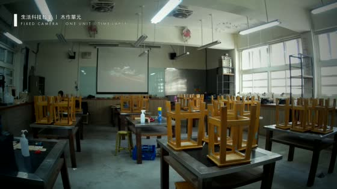
00:01A1晨光中的空教室，疊椅靜立，緩慢推近。
8× 縮時 · zoom-in · 暈影
場記卡：生活科技教室｜木作單元
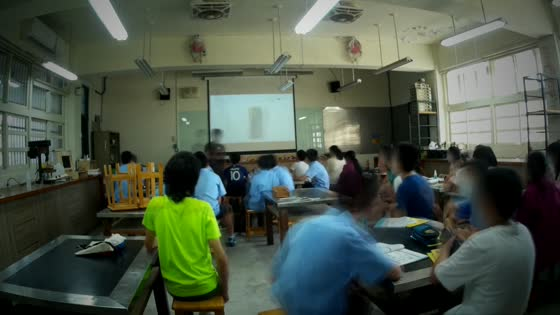
00:07A2學生湧入，化為流動的光影殘像。
40× + tmix=8 殘影（＝匿名）
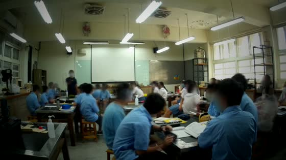
00:15A3低頭製圖的一整節，鉛筆與橡皮屑。
30× 縮時 · deface＋tmix
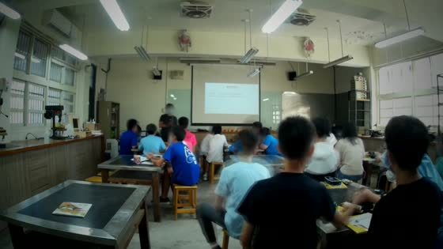
00:25A4工作桌邊的動手實作，木料來回。
40× 縮時
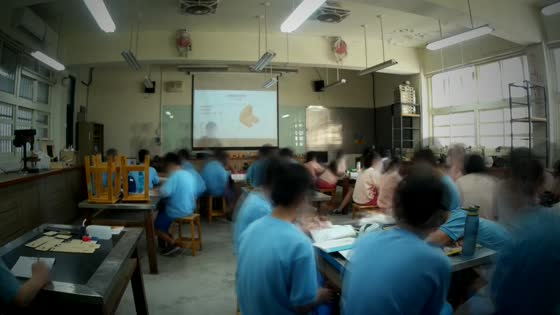
00:31A5全班面向前方，投影片講解工法。
40× 縮時
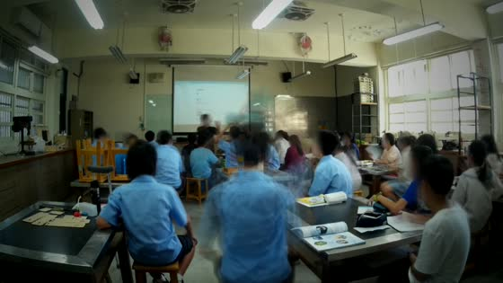
00:37A6下一節人潮再度回流座位。
40× 縮時
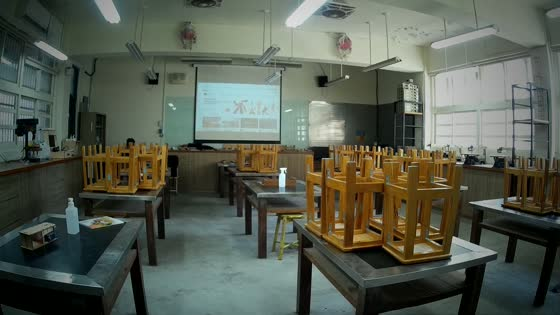
00:43A7人去樓空，投影幕倒數鐘飛轉。
60× 縮時 · 時間印記
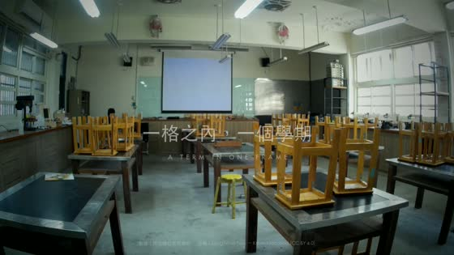
00:49A8回到空景，但桌上多了完成的木作。
9× 縮時 · 片尾標題淡入
標題：一格之內，一個學期
把素材當成多年後回望的記憶——顆粒、褪色、逆光剪影、稀疏鋼琴。不解說「在上什麼課」，只捕捉專注、木屑、口罩上方的眼神與午後塵光。
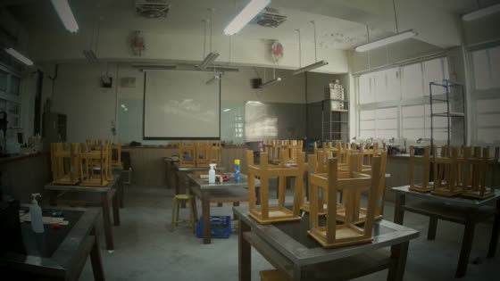
00:00C1晨光中的空教室，極慢推近。
褪色 LUT · 顆粒 · 慢推
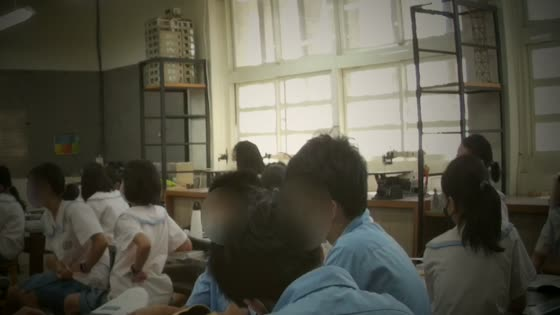
00:06C2逆光窗邊，伏案製圖的剪影。
壓暗剪影＋deface（雙重去識別）
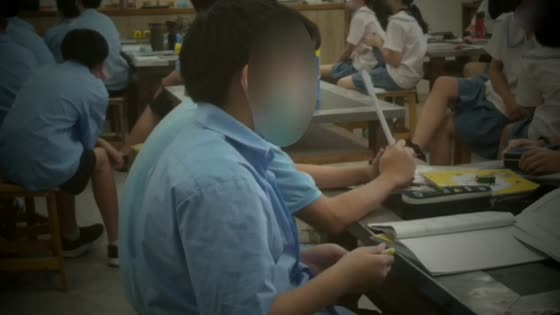
00:11C3鉛筆在學習單上慢慢移動。
中央裁切細節 · 手部
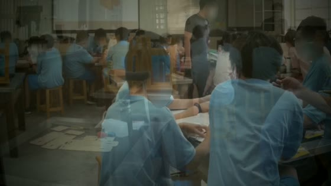
00:15C4木框、膠帶與角鐵的紋理。
物件特寫 · 無人
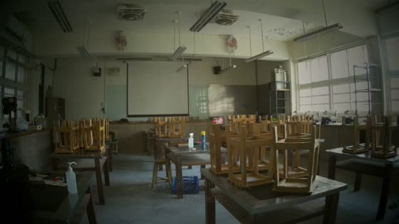
00:19C5一排低頭的背影，安靜。
背向鏡頭＋deface
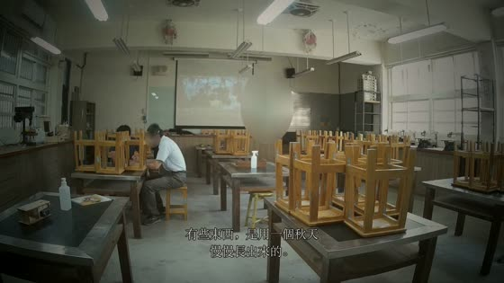
00:23C6空教室強逆光，椅腳間的塵光。
過曝霧感 · 慢推
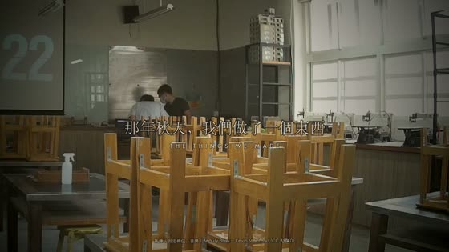
00:29C7一個身影獨自停在教室前方。
壓暗剪影＋deface
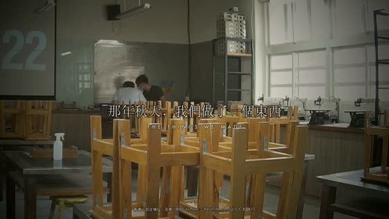
00:33C8工作桌上一件完成的木作，緩緩淡出。
慢推＋詩句字幕＋標題
字幕：有些東西，是用一個秋天慢慢長出來的。
把固定廣角當成「某個系統的監視畫面」，冷色調＋時間碼＋資料疊層，以一個 AI 的口吻觀察一群「受試者」如何學會「製造物件 #4471（木框）」。臉上的模糊遮蔽＝把『未成年去識別』直接變成風格語言。
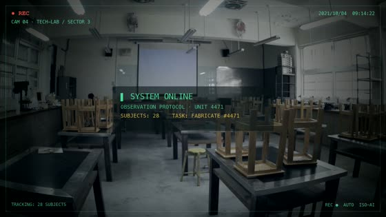
00:00E1系統開機，掃描線掠過空置設施。
冷調＋掃描線＋開機字串
SUBJECTS: 28 · TASK: FABRICATE 4471
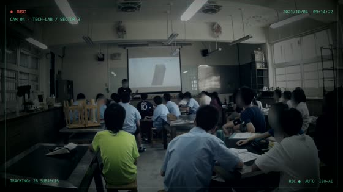
00:05E2廣角監看：受試者就位，重複以石墨於纖維上做記號。
deface 模糊＝遮蔽＋資料層
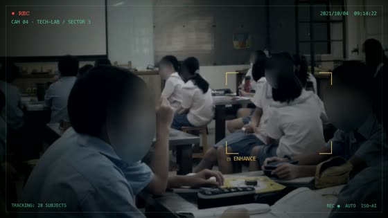
00:11E3放大某受試者的工作區。
裁切推近＋「ENHANCE」框
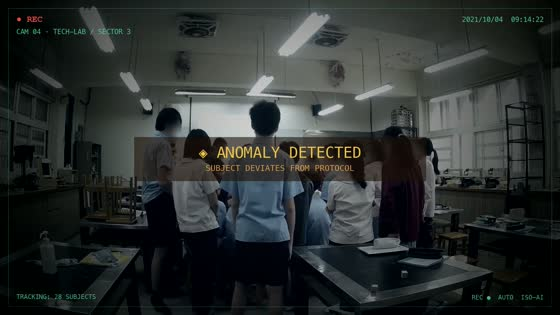
00:15E4偵測到受試者偏離流程（起身/走動）。
琥珀警示閃爍＋抖動
◈ ANOMALY DETECTED
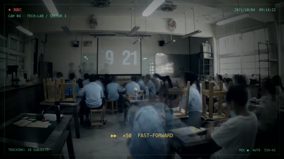
00:20E5系統快轉觀察，時間碼飛旋。
縮時＋滾動時間碼 HUD
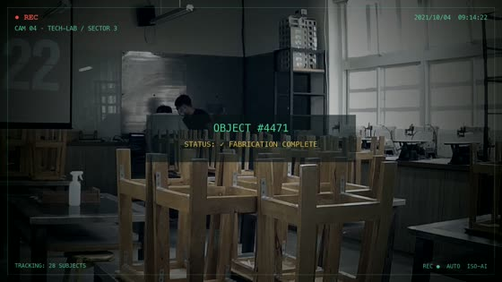
00:25E6物件 #4471 成形，列陣於檯面。
物件特寫＋狀態字串
OBJECT #4471 — STATUS: COMPLETE
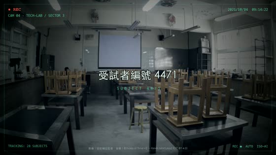
00:30E7燈滅，畫面轉為雜訊。
訊號中斷＋雜訊＋標題
標題：受試者編號 4471
把這間教室當成一間古怪的「工藝研究所」，置中對稱、粉彩調色、章節分段，用一本正經的字卡介紹每件器物與每道工序。
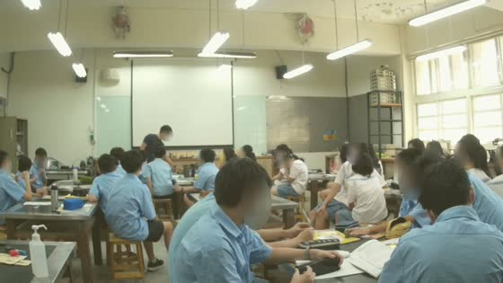
00:04B1第一章：置中的製圖桌，鉛筆與三角板。
置中裁切＋粉彩＋deface
字卡：第一章 · 一條線 / THE LINE
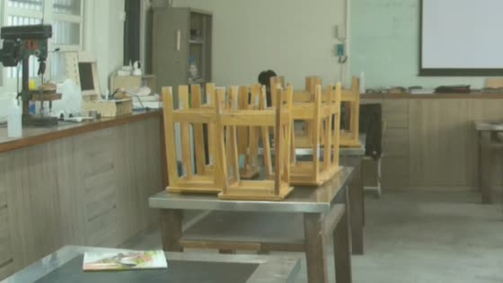
00:12B2第二章：機器們的對稱巡禮，逐一掛名。
置中 · 物件 · 標籤
標籤：THE DRILL PRESS, 2021
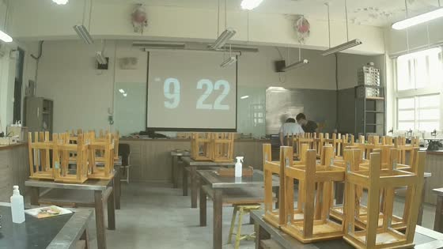
00:20B3第三章：四十座木框小塔，博物館式陳列。
置中對稱 · 物件
字卡：第三章 · 四十座小塔
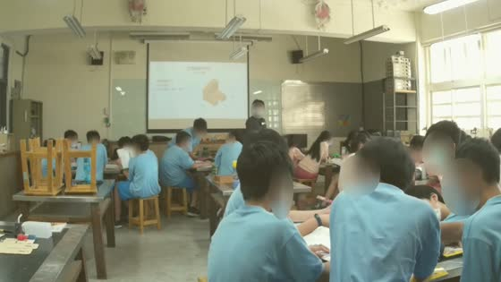
00:27B4第四章：全班置中定格 deadpan，鐘響之前。
置中＋deface＋粉彩
字卡：第四章 · 鐘響之前
假裝有攝影團隊長駐這間教室，用 deadpan 字幕、突然推近（Office zoom）、冷開場與假字卡，把日常的小荒謬變成情境喜劇。
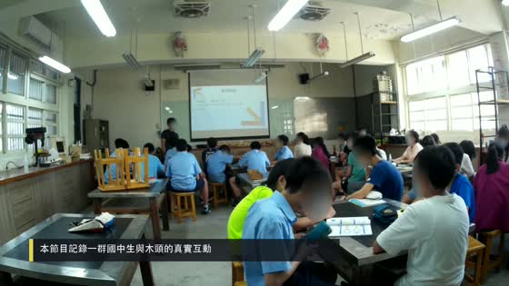
00:00D1倒數鐘剩 10 秒，全班無動於衷 → 鐘響瞬間騷動。
冷開場＋標題卡＋deface
標題卡：生科教室 · 第三節
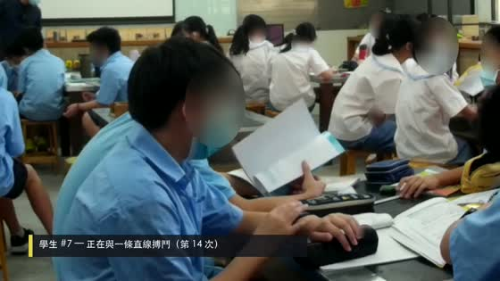
00:06D2一個學生畫了又擦、擦了又畫。
突然推近（zoom punch）＋字幕
字幕：學生 #7 — 正在與一條直線搏鬥
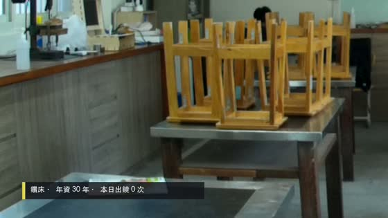
00:12D3鑽床特寫，字幕替它配內心戲。
物件特寫＋擬人字幕
字幕：鑽床，入行 30 年，沒被開過機
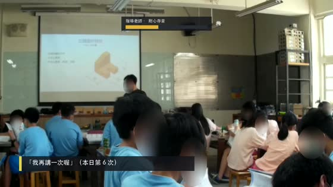
00:17D4老師在前方講解，假 UI 顯示耐心值下降。
假 UI 進度條＋字幕
UI：老師耐心值 ▓▓▓░░ 58%
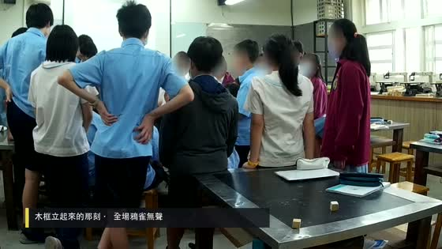
00:22D5木框終於立起，全班（模糊）無聲擊掌。
deface＋字幕＋收尾卡
字幕：那天，沒有人記得是誰先鼓掌的